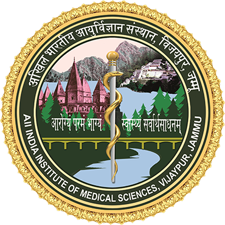
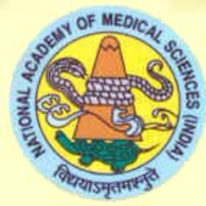

CME
“Recent Advances in Ophthalmology”
Sunday, 2nd March, 2025
Venue: Convention Center, AIIMS, Vijaypur, Jammu
Organized by
Department of Ophthalmology, All India Institute of Medical Sciences,
Vijaypur, Jammu
Under the Aegis of the National Academy of Medical Sciences
Patron:
Prof. (Dr.) Shakti Kumar Gupta
ED and CEO, AIIMS, Jammu
Co-Patron:
Prof. (Dr.) Sunil Kant
MS and Dean (Research)
AIIMS Jammu
Prof. (Dr.) Meeta Gupta
Dean (Academics)
AIIMS Jammu
Prof. (Dr.) Meeta Gupta
Dean (Academics)
AIIMS Jammu
Guest Faculty
Prof. J S Titiyal Prof. Radhika Tandon
Prof. Vishali Gupta Prof. Jyotirmay Biswas
Prof. Pradeep Venkatesh
Organizing Chairperson
Dr Bhavani Raina
Organizing Secretary
Dr Nitin Kumar
Executive Members Organizing Committee
Dr Nazia Anjum Dr Ridham Nanda
CME Secretariat
Room No. 101, OPD Block, Tower 6, Department of Ophthalmology,
All India Institute of Medical Sciences,
Vijaypur, Jammu
| Time |
Topic |
Speaker |
| 8:45 am - 9:00 am |
Registration |
------------------- |
| 9:00 am - 9:10 am |
Welcome the guest/Introduction of CME |
Dr. Bhavani Raina
Additional Professor
Dept. of Ophthalmology, AIIMS Jammu |
| 9:10 am - 9:15 am |
Lamp Lighting by dignitaries |
------------------- |
| 9:15 am - 10:00 am |
NAMS Presentation |
Prof. Umesh Kapil
Secretary NAMS |
| 10:00 am - 10:15 am |
Inaugural Address |
Prof. Shakti Kumar Gupta, ED and CEO AIIMS Jammu |
| 10:15 am - 11:00 am |
Recent Trends in Cataract Surgery and IOLs |
Prof. J S Titiyal
Ex Chief RP Center of Ophthalmic Sciences, AIIMS, Delhi |
| 11:00 am - 11:45 am |
Turning Mistakes into Mastery: The Art of Improvement |
Prof. Vishali Gupta
Uvea & Retina Services, PGIMER, Chandigarh |
| 11:45 am - 12:00 noon |
Tea Break |
| 12:00 pm - 12:45 pm |
Eye Banking and Corneal Donation: Recent updates |
Prof. Radhika Tandon
Chief RP Center of Ophthalmic Sciences, AIIMS, Delhi |
| Introduction/CV of speaker |
| 12:45 pm - 1:30 pm |
Recent advances in Uveitis Management |
Prof. Jyotirmay Biswas
Chief Uvea and Ocular Pathology, Sankara Nethralaya, Chennai |
| Introduction/CV of speaker |
| 1:30 pm - 2:15 pm |
- |
Prof. Pradeep Venkatesh
Retina, Vitreous and Uvea Services, RP Center of Ophthalmic Sciences, AIIMS, Delhi |
| 2:15 pm - 2:20 pm |
Vote Of Thanks |
Dr. Nitin Kumar
Associate Professor
Dept. of Ophthalmology, AIIMS, Jammu |
| 2:20 pm - 2:50 pm |
Lunch |
| 2:50 pm - 4:30 pm |
Poster/Case Presentation |
Judges: |
| 4:30 pm - 5:30 pm |
PG Quiz |
Quiz Master: Prof. J. Biswas |
| 10:00 am – 10:15 am |
Inaugural Address |
Prof. Shakti Kumar Gupta, ED and CEO AIIMS Jammu |
| Introduction/CV of speaker |
| 10:15 am - 11:00 am |
Recent Trends in Cataract Surgery and IOLs |
Prof. JS Titiyal
Ex Chief RP Center of Ophthalmic Sciences, AIIMS, Delhi |
| Introduction/CV of speaker |
| 11:00 am - 11:45 am |
Turning Mistakes into Mastery: The Art of Improvement |
Prof. Vishali Gupta
Uvea & Retina Services, PGIMER, Chandigarh |
| Introduction/CV of speaker |
| 11:45 am - 12:00 noon |
Tea Break |
| Introduction/CV of speaker |
| 12:00 pm - 12:45 pm |
Eye Banking and Corneal Donation: Recent updates |
Prof. Radhika Tandon
Chief RP Center of Ophthalmic Sciences, AIIMS, Delhi |
| Introduction/CV of speaker |
| 12:45 pm - 1:30 pm |
Recent advances in Uveitis Management |
Prof. Jyotirmay Biswas
Chief Uvea and Ocular Pathology, Sankara Nethralaya, Chennai |
| Introduction/CV of speaker |
| 1:30 pm - 2:15 pm |
- |
Prof. Pradeep Venkatesh
Retina, Vitreous and Uvea Services, RP Center of Ophthalmic Sciences, AIIMS, Delhi |
| 2:15 pm - 2:20 pm |
Vote Of Thanks |
Dr. Nitin Kumar
Associate Professor
Dept. of Ophthalmology, AIIMS, Jammu |
| 2:20 pm - 2:50 pm |
Lunch |
| 2:50 pm - 4:30 pm |
Poster/Case Presentation |
Judges: |
| 4:30 pm - 5:30 pm |
PG Quiz |
Quiz Master: Prof. J. Biswas |